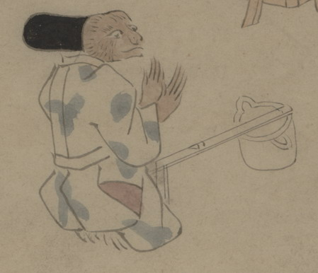

猿の化物。黒い烏帽子をかぶり、青い柄の入った衣を着て、座っている。銚子を床に置いて、手拍子をしているようである。
出典：親書誌：U426_nichibunken_0150：付喪神絵詞；ツクモガミエコトバ／日付：2010／資源識別子：U426_nichibunken_0150_0036_0000
Copyright (c)2010- International Research Center for Japanese Studies, Kyoto, Japan. All rights reserved.